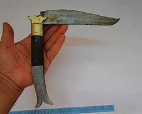
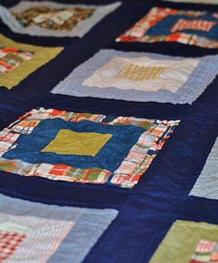
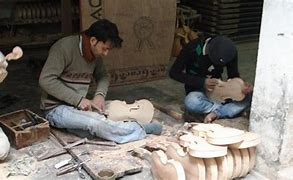

KnifeRampur was traditionally famous for the knives known as Rampuri Chaaku, which even made their way to Bollywood crime thrillers in the 1960s and 1970s. Eventually the Government of Uttar Pradesh banned making knives longer than 4.5 inches in blade length, leading to a drop in their popularity. |
 |
|  | Zari and ZardoziZari and zardozi works that adorn and beautify the clothing of the Nawabs as well as the common man are from the magical hands of the weavers and knitters in Rampur. Being Nawab's residency, the city is cradle of zardozi and hand works. Hand and embroidery work from Rampur has its own value in the neighboring country. The zardozi products from the city have become the brand to carry its own authenticity. |
ViolinViolin is the only instrument in the world which expresses the feeling of love perfectly, says Gayasuddin, one of the last few violin makers in Rampur city. ‘Made in Rampur’ violins were once considered as the world’s best. Sadly, the industry is breathing its last. |
 |